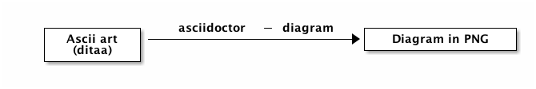

Asciidoctor et Java
Benoit Priouxbenoit.prioux@gmail.com
Me
@binout
binout
- Développeur Java depuis presque 10 ans
Membre du Bordeaux JUG
- Une petite pensée pour
bdx.iole 17 octobre !
- Une petite pensée pour
- Technical Leader chez Lectra, éditeur de logiciels dans le monde de la mode
Quand il faut écrire de la documentation
- Les outils ne nous aident pas toujours
- La maintenance est difficile
- Le format n’est pas adapté
- On perd du temps sur la mise en forme
Une solution
Utiliser un langage de balisage : markdown, wiki, latex, asciidoc, …
parce que :
- la forme prend moins d’importance que le fond
- c’est du texte, donc un éditeur classique suffit
- on peut gérer l’historique avec un SCM
- à partir d’une même source, on peut publier vers plusieurs formats
- on a un peu l’impression de hacker ;-)
Asciidoc
- Langage créé en 2002
- Syntaxe proche de markdown mais en plus évolué
- Plus polyvalent que wiki, plus simple que Latex
- 1ère implémentation du processeur en Python
Use AsciiDoc for document markup. Really. It’s actually readable by humans, easier to parse and way more flexible than XML.Linus Torvalds
Exemple
= Hello, Jug Summer Camp!
Benoit Prioux <benoit.prioux@gmail.com>
An introduction to http://asciidoc.org[AsciiDoc].
== First Section
* item 1
* item 2
NOTE: Atom has an Asciidoc package !Asciidoctor
- Implémentation open-source écrit en
Ruby - Permet de convertir des fichiers
asciidocvers différents backends :docbook,html5,epub,pdf(et mêmedeckjs) 12 août 2014 : sortie de la version
1.5.0- 1ère version majeure après 2 ans de développement
- 50 contributeurs, 1800 commits, 1500 tests
- introduit des évolutions de la syntaxe
asciidoc, tout en gardant la compatibilité

Ils utilisent déjà asciidoctor
- Github
- Groovy
- Arquillian
- Spring
- Golo
- Ceylon
- O’Reilly
Et si je ne connais pas Ruby, c’est pas pour moi ?

+ asciidoctorj =
- une integration complète de
asciidoctordans le monde Java - une API
- une CLI
Asciidoctorj in action
Maven
<dependency>
<groupId>org.asciidoctor</groupId>
<artifactId>asciidoctorj</artifactId>
<version>1.5.0</version>
</dependency>Gradle
dependencies {
compile('org.asciidoctor:asciidoctorj:1.5.0') {transitive=false}
}Asciidoctor et Maven (1)
Declaration du plugin
<plugin>
<groupId>org.asciidoctor</groupId>
<artifactId>asciidoctor-maven-plugin</artifactId>
<version>1.5.0</version>
...
</plugin>Asciidoctor et Maven (2)
Convertit les fichiers
src/main/asciidoc en html dans target/generated-docs<plugin>
...
<executions>
<execution>
<id>output-html</id>
<phase>generate-resources</phase>
<goals>
<goal>process-asciidoc</goal>
</goals>
</execution>
</executions>
</plugin>Asciidoctor et Maven (3)
S’intègre à la génération de site Maven (
src/site/asciidoc)<plugin>
<groupId>org.apache.maven.plugins</groupId>
<artifactId>maven-site-plugin</artifactId>
<version>3.2</version>
<dependencies>
<dependency>
<groupId>org.asciidoctor</groupId>
<artifactId>asciidoctor-maven-plugin</artifactId>
<version>1.5.0</version>
</dependency>
</dependencies>
</plugin>Asciidoctor et Gradle (1)
build.gradle
buildscript {
repositories {
jcenter()
}
dependencies {
classpath 'org.asciidoctor:asciidoctor-gradle-plugin:1.5.0'
}
}
apply plugin: 'org.asciidoctor.gradle.asciidoctor'Asciidoctor et Gradle (2)
Convertit les fichiers
src/asciidoc en html dans build/docsasciidoctor {
outputDir = new File("$buildDir/docs")
options = [
doctype: 'book',
attributes: [
'source-highlighter': 'coderay',
toc : ''
]
]
}Asciidoctor et Ant (unofficial)
Besoin de "jouer" avec le classloader de
Ant<target name="doc">
<taskdef resource="net/jtools/classloadertask/antlib.xml" classpath="lib/ant-classloadertask.jar"/>
<classloader loader="thread" classpath="lib/asciidoctor-ant.jar"/>
<taskdef name="asciidoctor" classname="org.asciidoctor.ant.AsciidoctorAntTask"/>
<asciidoctor sourceDirectory="src/asciidoc" outputDirectory="build/docs"/>
</target>Asciidoctor et Javadoc (1)
Javadoc traditionnelle
/**
* <h1>Asciidoclet</h1>
* <p>Sample comments that include {@code source code}.</p>
*
* <pre>{@code
* {@literal @}SuppressWarnings("UnusedDeclaration")
* public static void main(String... args) {
* System.out.println("Hello World");
* }
* }</pre>
*/Asciidoctor et Javadoc (2)
Javadoc avec Asciidoclet
/**
* = Asciidoclet
*
* Sample comments that include `source code`.
*
* [source,java]
* --
* @SuppressWarnings("UnusedDeclaration")
* public static void main(String... args) {
* System.out.println("Hello World");
* }
* --
*
*/Et bien plus encore …
Il est possible de coder des extensions pour asciidoctor (comme l’excellent asciidoctor-diagram).

Depuis asciidoctorj:1.5.0, on peut :
- charger des extensions écrites en ruby (gems)
- écrire des extensions en Java, Groovy, Scala, …
Thanks
/